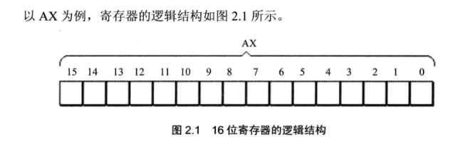
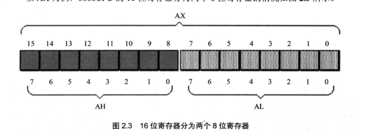
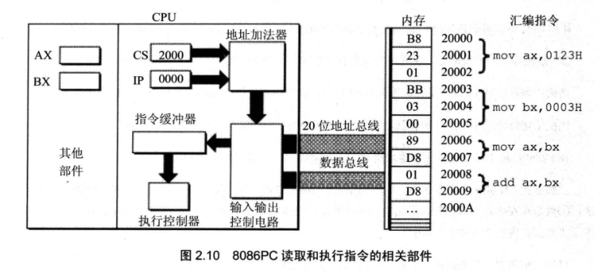
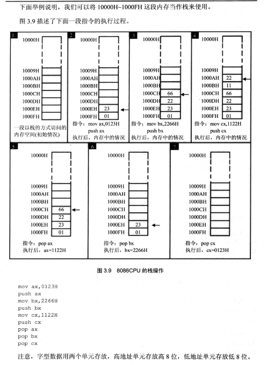

1.CPU概述
一个典型的CPU主要由三部分组成：运算器，控制器，寄存器，这些器件的信息传递主要靠CPU的内部总线进行（不同于外部总线）。
简单的说，在CPU中：
运算器进行信息处理
寄存器进行信息存储
控制器控制各个器件进行工作
内部总线连接CPU各内部器件，在它们之间进行数据的传送
对于一个程序员来说，CPU的主要部件就是寄存器。寄存器是CPU中程序员可以用指令进行控制的部件。
2.寄存器概述
不同的CPU寄存器的个数，结构是不一样的。
8086CPU有14个寄存器，每个寄存器都有一个名称，分别是：
AX,BX,CX,DX,SI,DI,SP,BP,IP,CS,SS,DS,ES,PSW.
我个人将他们分为四类：X结尾的，I结尾的，P结尾的，S结尾的，W结尾的。每一类寄存器的用途不一，下面进行详细学习。
3.通用寄存器
在8086cpu中所有寄存器都是16位的，其中AX,BX,CX,DX用来存放一般性数据，被称为通用寄存器，其结构如下：

但是为了兼容上一代的程序，又可以将AX分为AH,AL：

我们可以根据我们的用途来对它们进行灵活使用。
4.段寄存器
我们前面学习到，8086CPU在访问内存时要由相关部件提供内存单元的段地址和偏移地址送入地址加法器合成物理地址。
这里我们需要了解是什么部件提供段地址，段地址在8086CPU的段寄存器中存放:CS,DS,SS,ES.
1)CS代码段寄存器
CS:IP两个寄存器决定了CPU当前要读取指令的地址，CS为代码段寄存器，IP为指令指针寄存器（偏移地址）。
在8086CPU中，任意时刻，设CS中的内容是M，IP中的内容是N，8086CPU将从内存M*16+N单元开始读取一条指令并执行。
简单来说：任意时刻，CPU将CS:IP指向的内容当作指令执行。

8086CPU的工作流程可以简述为：
1 从CS:IP指向的内存单元读取指令，读取的指令进入指令缓冲器。
2 IP=IP+所读取指令的长度，从而指向下一条指令。
3 执行指令，转到步骤1，重复这个过程。
2）修改CS,IP的指令
如果想同时修改CS,IP的内容，我们可以用
jmp 段地址：偏移地址 来更改，例如：
1 jmp 2AE3:3 执行后，CS=2AE3H ,IP=0003H
如果只想更改IP的内容，我们可以用：
1 jmp 某一合法寄存器
2 mov ax 0001H
3 jmp ax 这里ip=0001H了
3）DS数据段寄存器
CPU要读写一个内存单元的时候，必须先给出这个内存单元的地址，在8086PC中，内存地址由段地址和偏移地址组成。
DS寄存器通常用来存放要访问的数据的段地址。比如我们如果要读取10000H单元的内容，我们可以：
1 MOV BX,1000H
2 MOV DS,BX
3 MOV AD,[0]//这里的[0]中的0指的是偏移地址，在执行这条指令是DS被自动取出使用
这里注意DS不可直接赋值，而是用过一般寄存器间接赋值的，其他的段寄存器也是如此。
4）SS栈段寄存器
在cpu栈结构使用中，CPU如何知道栈顶的位置？
在8086CPU中有两个寄存器，段寄存器SS和就寄存器SP，栈顶的段地址存放在SS中，偏移地址存放在SP中。
任意时刻，SS:SP指向栈顶元素。push指令和pop指令执行时，CPU从SS和SP中得到栈顶的位置。
栈又叫先进后出表或后进先出表，现在的CPU中都有栈的设计，所以我们需要了解CPU中的栈。
8086CPU提供相关的指令来以栈的方式访问内存空间这就意味着我们可以将一段内存当作栈来使用。
8086提供入栈和出栈指令，最基本的两个就是PUSH入栈，POP出栈。
1 push ax 表示将寄存器ax中的数据送入栈
2 pop ax 表示从栈顶取出数据送入ax
在8086中的入栈和出栈操作都是以字为单位进行的。

看完上面的例子我们知道，在上面我们将10000H~1000FH这段内存当作栈来使用，CPU在执行push和pop指令时将对这段空间
按照栈的后进先出的规则进行访问的，但是：
CPU如何知道10000H~1000FH这段内存空间被当作栈呢？
在执行push和pop的时候CPU又是如何知道那个是栈顶单元？
在这里SS:SP的作用就出现了，SS段寄存器用来存放栈顶段地址，SP寄存器用于存放栈顶偏移地址，任意时刻，SS:SP指向栈顶元素。
CPU根据栈段地址：偏移地址的范围就可以推断出栈的内存空间有哪些，这里是可以人为控制的。
注意：我们在编程的时候要自己操心栈顶越界的问题，要根据可能用到的最大栈空间来安排栈的大小，防止入栈的数据太多而导致的越界，执行出栈操作的时候也要注意。